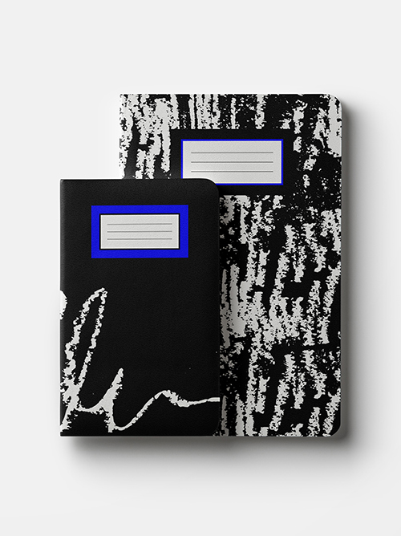
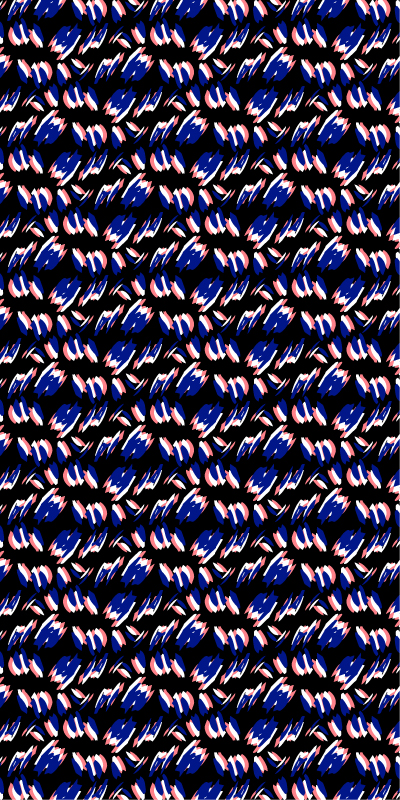
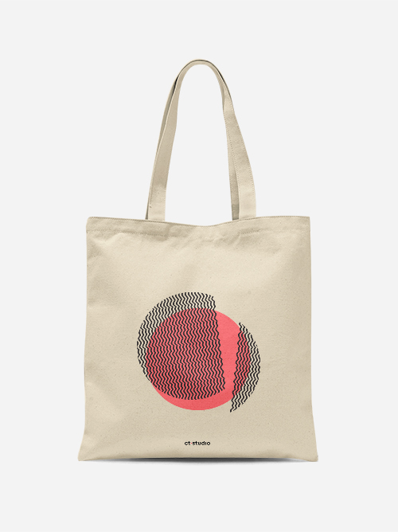
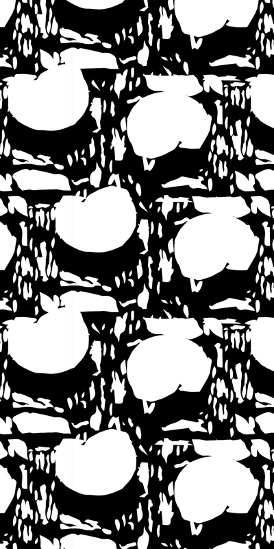
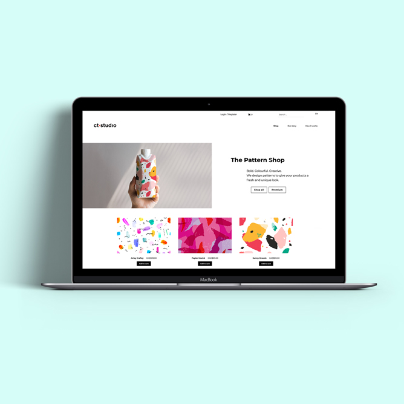

I design prints and patterns
to make everyday objects more special.
I create textures and abstract worlds.
I play with geometry to explore shapes differently.
•••




I love simplicity and complexicty.
I love paradox and contradiction.
And I love the strength and the minimalism of the color black.
It is in this organized chaos, that I find creativity.
In perpetual admiration of the creative
world that surrounds me, my approach to design is motivated by the need
to imagine new possibilities and new concepts.
I design web experiences for creative minds.
I build digital products with a hint of
minimalism and an artistic flair.
•••

In 2020, I embarked on a journey to learn new skills and enroled at Le Wagon's
coding bootcamp.
Design is a multi-faceted world and I explore each avenues with the same passion
for details and attention to functionality.